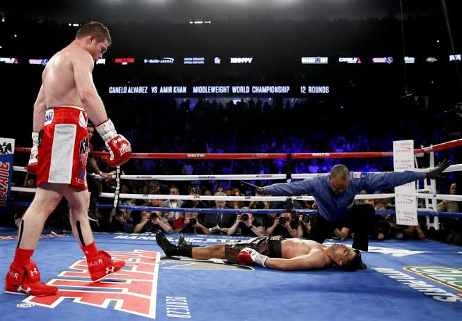

DIFERENCIAS ENTRE BOXEO Y MUAY THAI
El boxeo es un deporte de combate en el que dos oponentes se enfrentan usando únicamente los puños, siguiendo reglas estrictas y buscando demostrar técnica, resistencia y estrategia.
Qué es el boxeo
El boxeo es un deporte de contacto donde dos competidores, protegidos con guantes y supervisados por un árbitro, intercambian golpes con el objetivo de sumar puntos o lograr un nocaut. Se practica en un ring cuadrado, y cada combate se divide en rounds de duración fija, generalmente de 2 a 3 minutos.
Origen e historia
Aunque existen formas antiguas de lucha con puños desde civilizaciones como Grecia y Roma, el boxeo moderno surgió en Inglaterra en el siglo XVIII, evolucionando hacia un deporte reglamentado con normas de seguridad, categorías de peso y técnicas definidas
Las reglas básicas del boxeo establecen cómo se gana, qué golpes son válidos, qué acciones están prohibidas y cómo se puntúa un combate.
En resumen: el boxeo permite solo golpes de puño por encima de la cintura, exige equipo protector, prohíbe acciones peligrosas y organiza el combate en asaltos con árbitro y jueces.
Objetivo del combate
-
Ganar por nocaut (KO): el rival no puede levantarse antes de 10 segundos.
-
Ganar por decisión: los jueces otorgan puntos por golpes limpios, defensa y dominio.
-
Ganar por detención del árbitro (TKO): cuando un boxeador no puede continuar con seguridad.
Golpes permitidos
-
Solo puños cerrados.
-
Solo a la parte frontal y lateral del torso y a la cabeza.
-
Golpes deben ser limpios, con la zona de golpeo del guante.
-
-
-
Golpear en la nuca, espalda o debajo del cinturón.
-
Cabecear, empujar, agarrar o golpear después de la orden de “break”.
-
Golpes con el antebrazo, codo o mano abierta.
-
Golpear a un oponente caído o en proceso de levantarse.
Duración de los asaltos
-
Profesional: 3 minutos por asalto, con 1 minuto de descanso.
-
Amateur: suele ser 3 asaltos de 3 minutos (hombres) o 3 asaltos de 2 minutos (mujeres).
Equipamiento obligatorio
Cómo se puntúa
Los jueces valoran:

El Muay Thai es un arte marcial y deporte de combate originario de Tailandia que se caracteriza por el uso coordinado de puños, codos, rodillas y piernas, conocido como “el arte de las ocho extremidades”.
Qué es el Muay Thai
El Muay Thai es un sistema de combate que combina golpes contundentes, técnicas de clinch (agarres de pie) y un enfoque físico muy exigente. Se practica tanto como deporte competitivo como para defensa personal y condicionamiento físico.
Origen e historia
-
Surgió hace varios siglos en Tailandia como método de combate militar.
-
Con el tiempo evolucionó hacia un deporte nacional con reglas, rituales y tradiciones propias.
-
Hoy es una de las artes marciales más influyentes del mundo y base importante en deportes como el kickboxing y las MMA.
Las reglas básicas del Muay Thai permiten golpear con puños, piernas, rodillas y codos, prohíben acciones peligrosas como morder o golpear la nuca, y estructuran el combate en asaltos con puntuación por efectividad técnica.
Golpes permitidos
-
El Muay Thai es el arte de las ocho extremidades: se permiten puños, patadas, rodillas y codos
-
También se permite el clinch, es decir, agarrar al oponente para golpear con rodillas o controlar su postura
-
Acciones prohibidas
-
Morder, escupir, arañar, pellizcar o lanzar al rival intencionalmente al suelo
-
Golpear en los genitales, la nuca, la espalda o a un oponente que esté en el suelo
-
Cabecear, usar hombros o manos abiertas para golpear
-
Agarrarse a las cuerdas para obtener ventaja
-
Mantener el clinch sin atacar o más de cinco segundos sin acción efectiva (según reglas tailandesas)
-
Cómo se gana un combate
Según las reglas tradicionales:
-
Nocaut (KO): el rival no se levanta antes del conteo del árbitro
-
Nocaut técnico (TKO): el árbitro detiene la pelea por seguridad
-
Decisión de los jueces: si se llega al final del combate, gana quien acumule más puntos
Criterios de puntuación
-
Contundencia y daño visible.
-
Control del combate y ruptura de la postura del rival.
-
Estrategia, iniciativa ofensiva y variedad técnica.
-
Juego limpio (las faltas restan puntos).
️ Duración de los asaltos
-
Combates profesionales: 5 asaltos de 3 minutos, con descansos de 2 minutos.
-
Combates sin título: 3 asaltos de 3 minutos.
-
En mujeres profesionales: 5 asaltos de 2 minutos cada uno
Equipamiento obligatorio
Las reglas básicas del Muay Thai permiten golpear con puños, piernas, rodillas y codos, prohíben acciones peligrosas como morder o golpear la nuca, y estructuran el combate en asaltos con puntuación por efectividad técnica.
Golpes permitidos
-
El Muay Thai es el arte de las ocho extremidades: se permiten puños, patadas, rodillas y codos
-
También se permite el clinch, es decir, agarrar al oponente para golpear con rodillas o controlar su postura
.jpeg)
A continuacion se presenta una tabla que muestra esta diferencia, en ella tambien puedes encontrar una de las peleas mas importantes de cada diciplina, asi mismo a cada uno de los peleadores que participan en cada una:
DEPORTE |
DESCRIPCION |
VIDEOS DE PELEAS |
BOXEO |
El boxeo es un deporte donde dos personas se enfrentan a golpes de puño con sus manos cubiertas por guantes y de acuerdo a determinadas reglas. El ganador es aquel que logra derribar a su rival sin que este pueda levantarse antes de una cuenta de diez o que, al término del combate, suma más puntos que el oponente según la opinión de un jurado.
|
https://youtu.be/y-vdMUvIgd4?si=OXgqi6mVUkpRbNss
Pelea entre Canelo Alvarez y Julio Cesar Chavez Junior |
MUAY THAI
|
El muay thai, conocido como el «arte de las ocho extremidades», es el deporte nacional de Tailandia y una de las artes marciales de golpeo más eficaces del mundo. Mediante puñetazos, patadas, rodillazos y codazos, el muay thai combina tecnica disciplina y tradición en un solo deporte. |
https://youtu.be/RyBcyfk2TPY?si=myq8oOmHoYIBVSEq
Pelea entre Rodtang y Walter Goncalves |